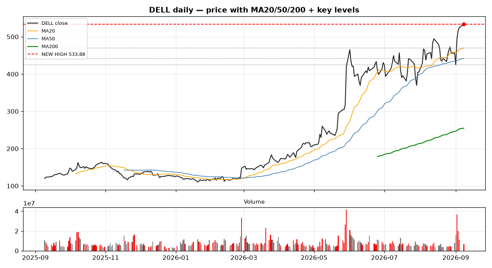

DELL closed at 533.88 on Sep 8, a brand-new 52-week high. This isn't a rounding top — it's a vertical breakout: +17% in five sessions, and +345% year-to-date. We broke down what the tape and the fundamentals are telling us.
The stock spent most of the year coiling in a wide range, then broke out vertically in early September. At 533.88 it sits 13.6% above the 20-day MA (469.91) and a full 109% above the 200-day MA (254.89). That gap to the 200-day is the classic signature of a parabolic run — momentum is clearly in command, but the mean-reversion risk is equally real if the narrative cracks.
Momentum is not exhausted yet. RSI(14) is 63.3 — still room before overbought — and the MACD histogram is +6.87 and still expanding, so the trend is feeding itself rather than rolling over.
Volume tells the gap-then-digest story: the breakout days (Sep 2–3) traded 20–37M shares against a ~15M daily average, then the latest session cooled to 6.6M (volume ratio 0.79). That is textbook — a burst of conviction, then a lower-volume digestion. Healthy continuation would show a retest of the breakout shelf on light volume that holds, then a reload.
One practical note: ATR(14) is 29.37, about 5.5% of price. This name moves — size stops to the range, not to hope.

The breakout has an earnings engine behind it, not just a multiple. Latest reported quarter — Q2 FY2027 (ended Jul 31, 2026):
Full-year FY2026 (ended Jan 30, 2026) came in at 113.5B revenue and 8.68 EPS.
The acceleration is concentrated in the infrastructure / AI-server segment (ISG) — Dell has become a primary conduit for accelerated-compute deployments, and backlog commentary has been the swing factor in the story. The key read for us: this is an earnings re-rating growing into the price, not a hope trade riding on sentiment alone.
Not financial advice. This is Sahm Research sharing a technical and fundamental read, not a recommendation to buy or sell.